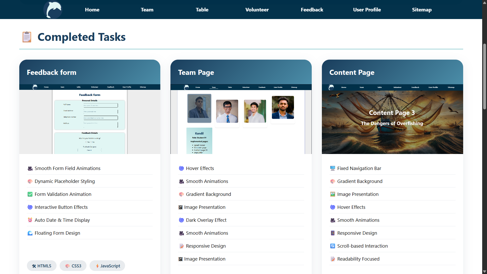
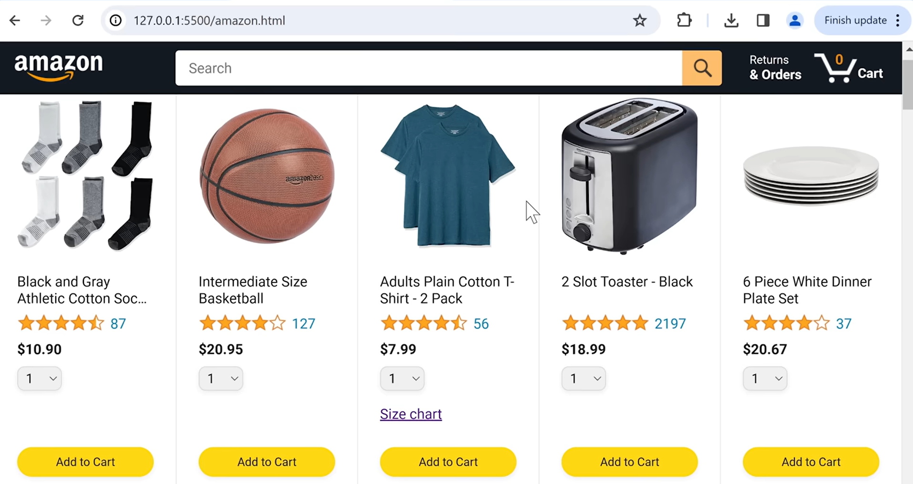
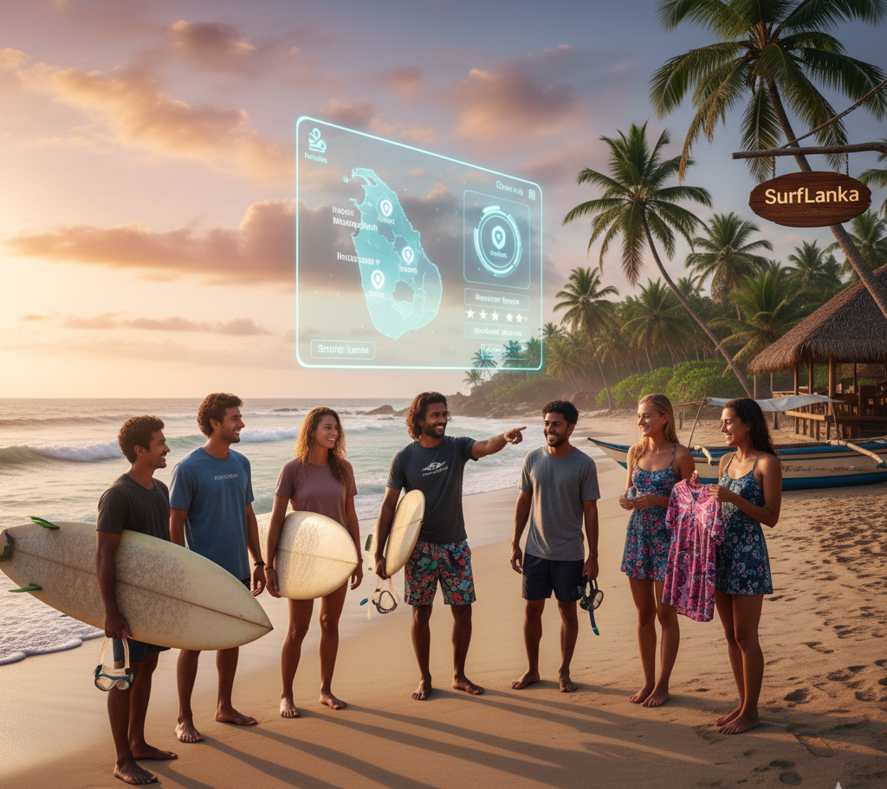
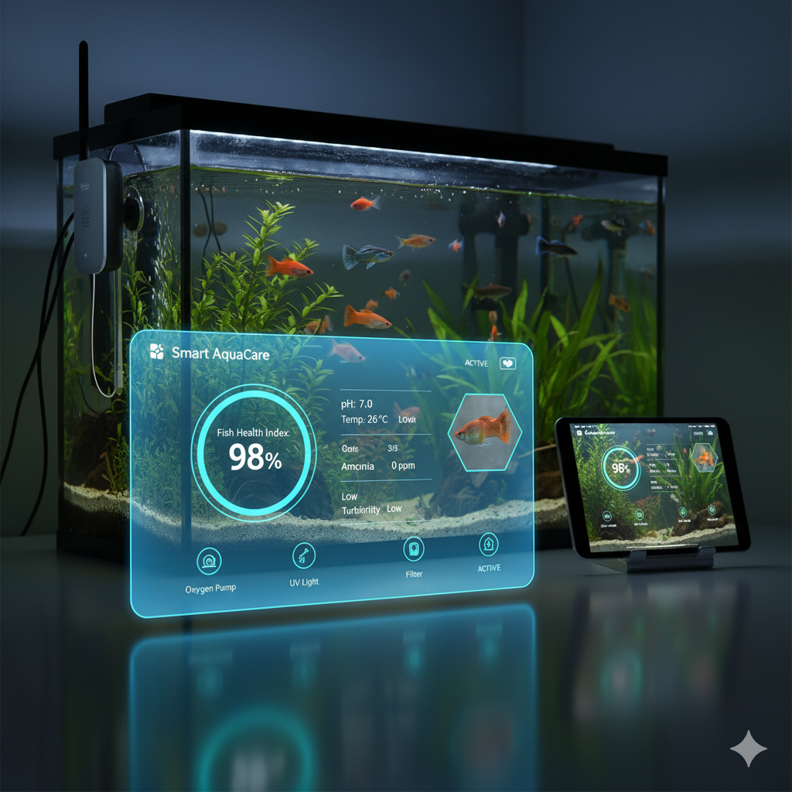
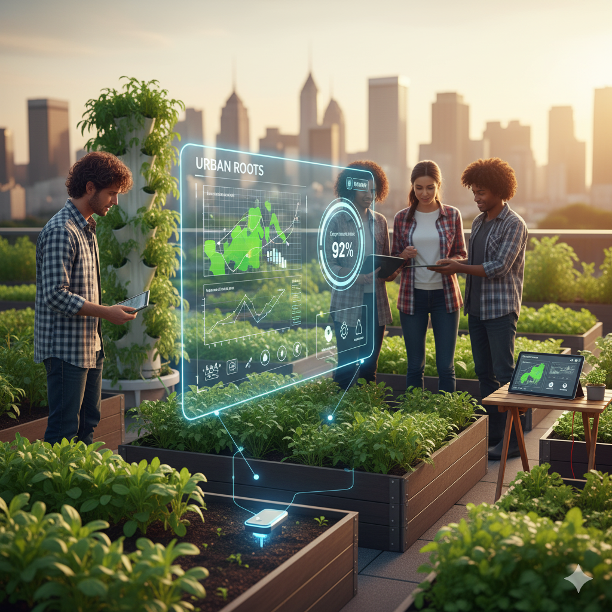

Project 1 — Life Below Water
HTML5 • CSS3 • JavaScript
Dedicated to protecting life below water, our platform raises
awareness and inspires action to combat pollution, overfishing, and
climate change—working to restore and preserve our oceans for future
generations.
Viwe on GitHub

Project 2 — Clone Of Amazon
HTML5 • CSS3 • JavaScript
A responsive Amazon clone built with HTML, CSS, and JavaScript,
featuring product listings, a shopping cart, and a user-friendly
interface that mimics the look and feel of the real Amazon website.
Viwe on GitHub
Project 3 — Clone Of YouTube
HTML5 • CSS3
A YouTube-inspired front-end made with HTML & CSS: polished layout,
responsive video grid, and realistic UI elements to showcase videos
and channel pages
Viwe on GitHub
Project 4 — System for GYM
JAVA
This Java system helps manage gym activities like member details,
attendance, payments, and fitness progress easily and efficiently.
Viwe on GitHub

Future Project A — SurfLanka
React.js • Node.js • Express.js • MySQL • Firebase • Bootstrap •
PayHere • Stripe • Google Maps API • OpenWeatherMap API
SurfLanka is a web and mobile platform that connects tourists and
local businesses for surfing, diving, and beach activities —
offering bookings, rentals, shopping, and secure payments to promote
safe and eco-friendly coastal tourism.

Future Project B — Smart AquaCare
ESP32 • Arduino IDE • Node.js • Firebase • MySQL • Python • React.js
• Bootstrap • Flutter • TensorFlow • scikit-learn • AWS •
OpenWeatherMap API
Smart AquaCare is an AI-enabled IoT system that monitors and
controls water quality in freshwater and saltwater tanks. It
measures key parameters, predicts fish health, automates equipment,
and allows users to monitor and manage their aquariums remotely via
mobile and web apps.

Future Project C — Urban Roots
ESP32 • Arduino IDE • Node.js • Firebase • MySQL • Python • React.js
• Bootstrap • Flutter • TensorFlow • scikit-learn • OpenWeatherMap
API • AWS
Urban Roots is a smart agriculture system that uses IoT and AI to
monitor soil, water, and weather conditions — helping urban farmers
automate irrigation, track plant health, and optimize crop growth
through a web and mobile platform.